Color-aligned Generation on Manual Drawing Conditions
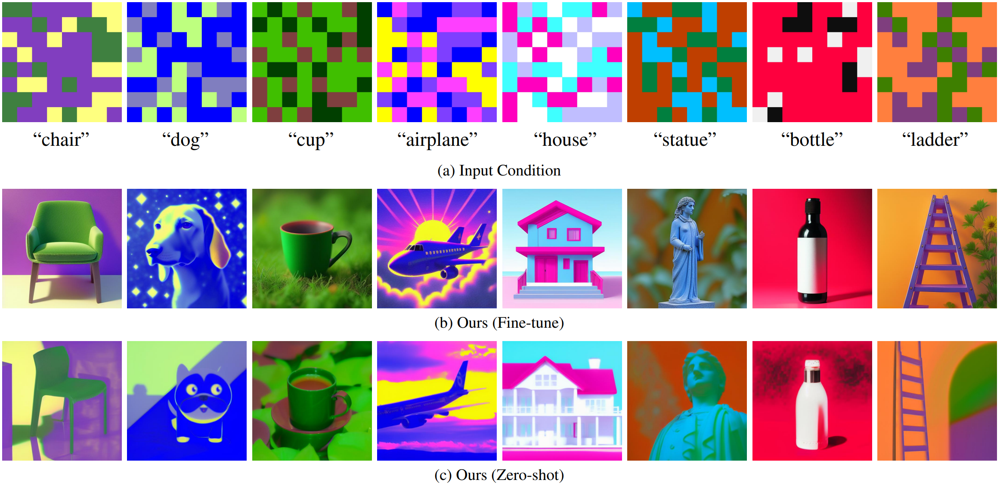
View additional results and baseline comparisons below.
View additional results and baseline comparisons below.
More can be found in the supplementary zip file.
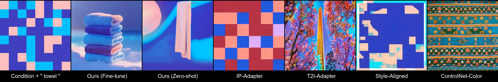
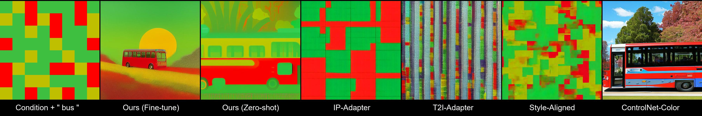
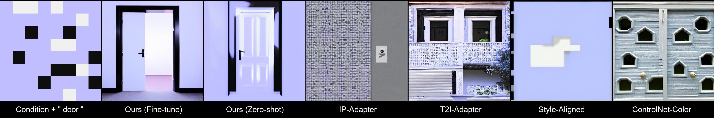
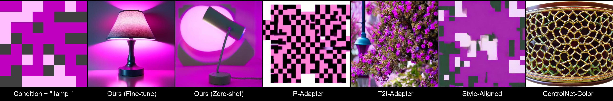
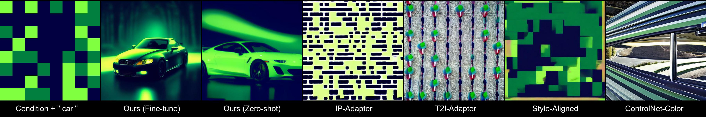
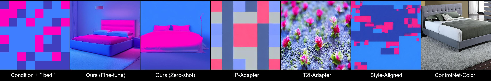
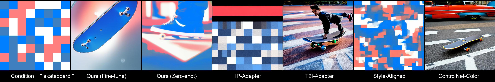
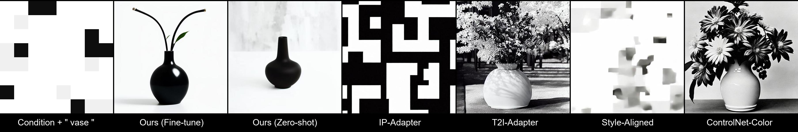

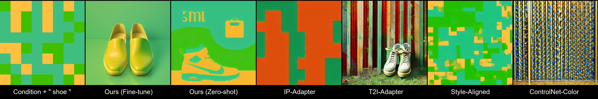
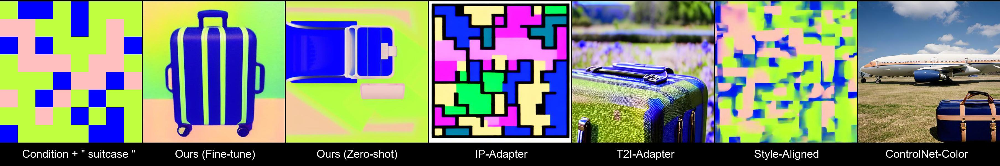
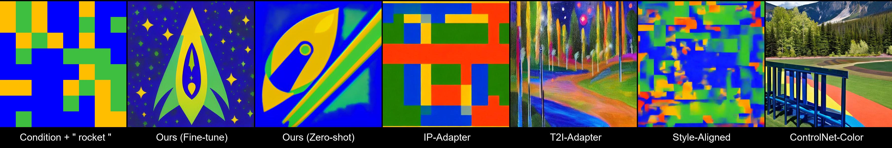
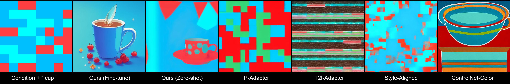
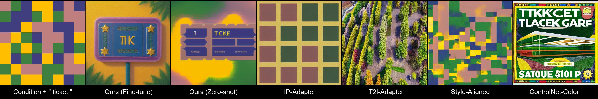
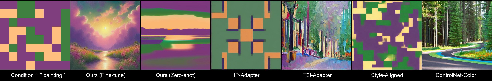
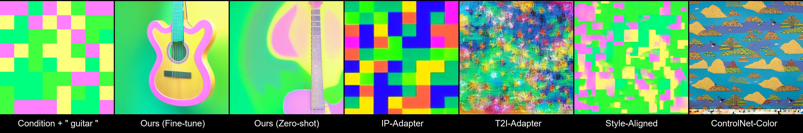
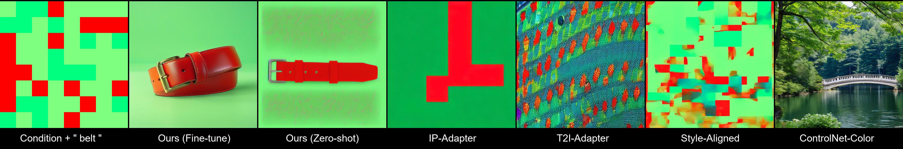
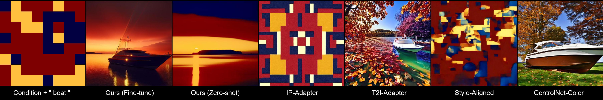

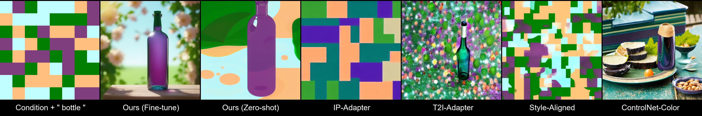
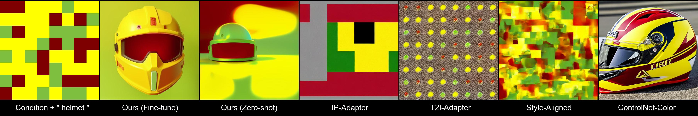
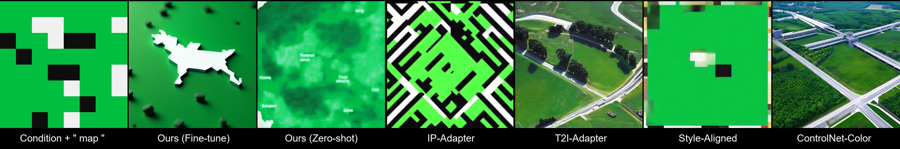
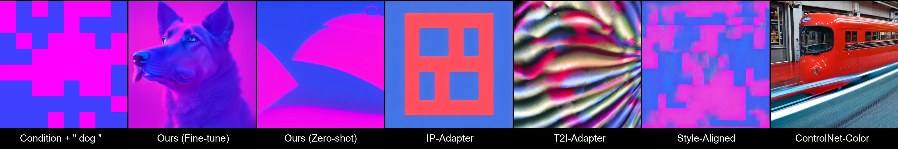
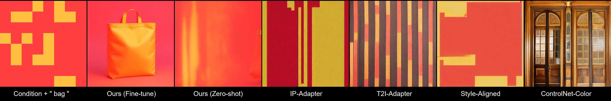